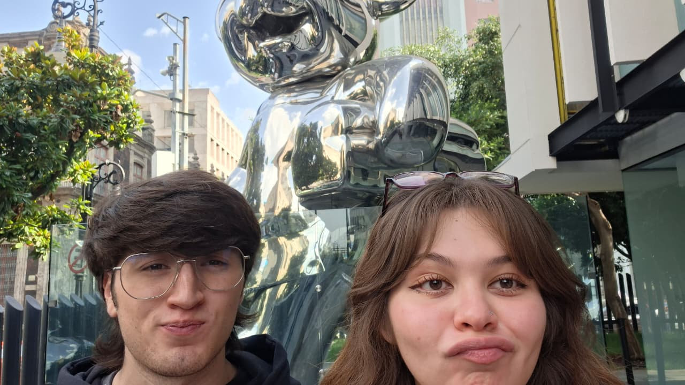
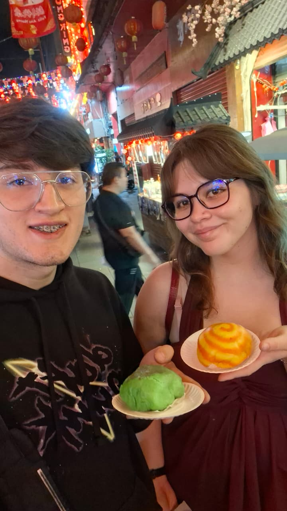
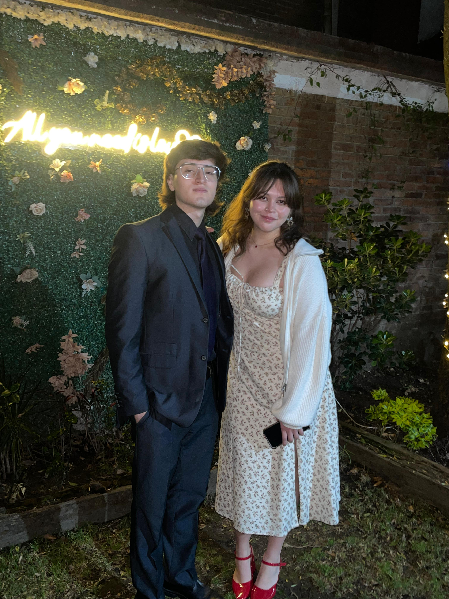

Tim Burton

Chapultepec

Morelia

Día de Muertos

Six Flags

Sarampión xD
Dinosaurios

Año nuevo

No me acuerdo

Museo Bimbo

Pan chino del chino de china
Billar de mala muerte
Mascarillas XDDDDDDDDDD

XV Años
Mi cumpleeee